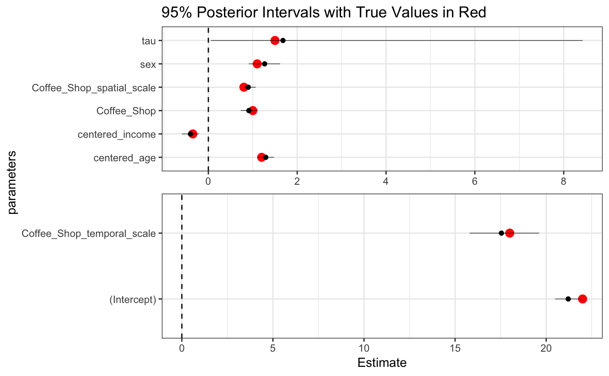
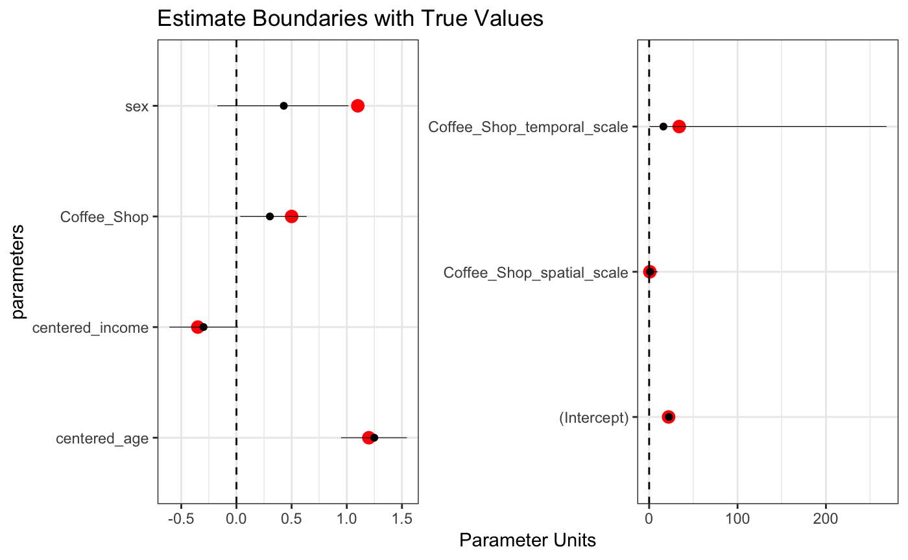
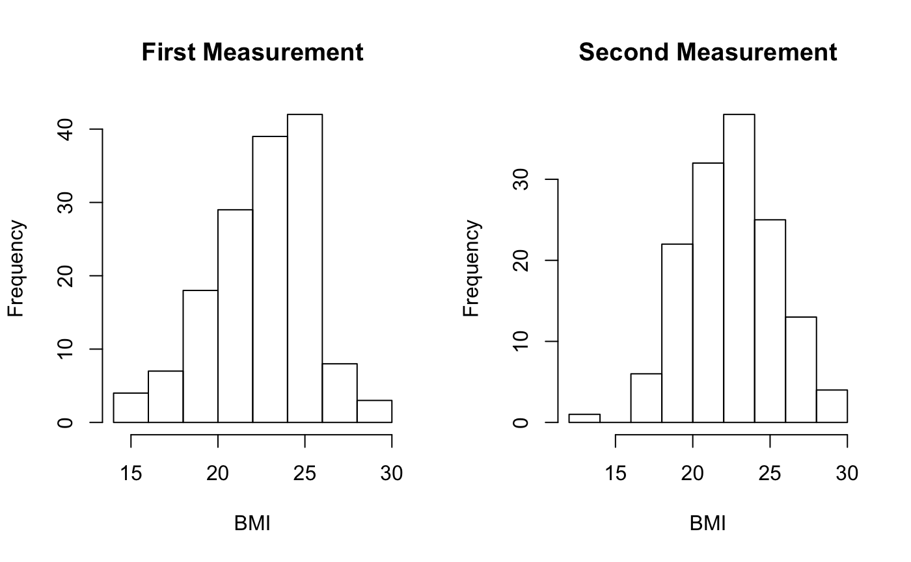

longitudinal-I.Rmdlibrary(dplyr)
#> Warning: package 'dplyr' was built under R version 3.5.1
#>
#> Attaching package: 'dplyr'
#> The following objects are masked from 'package:stats':
#>
#> filter, lag
#> The following objects are masked from 'package:base':
#>
#> intersect, setdiff, setequal, union
library(tidyr)
library(ggplot2)
library(rstap)
#> Loading required package: RcppSpatial-temporal aggregated predictor (STAP) models extension in the longitudinal setting incorporates heirarchical variance components to account for within subject or group-level correlation.
This setting also involves a different data structure, since exposure to built environment features now occurs across time, and subjects can move across time or space. dropping out of studies and built-environment features - stores - may close or open, the map and covariate space is dynamic. This requires a secondary id to join on in addition to the typical ‘id_key’. We’ll demonstrate this and the stap model using the simple case of homogenously distributed built environment features, with subjects measured across two time points.
Below we can see what the data for this kind of model might look like.
list('Subject Spatial-Temporal Data' = subj_data,
"BEF Spatial-Temporal Data" = bef_data)
#> $`Subject Spatial-Temporal Data`
#> # A tibble: 167 x 5
#> x y date ID class
#> <dbl> <dbl> <date> <int> <chr>
#> 1 -0.701 -0.412 1974-05-11 1 Subject
#> 2 -0.415 0.622 1976-03-04 2 Subject
#> 3 -0.924 -0.314 1976-04-15 3 Subject
#> 4 -0.700 -0.700 1986-12-24 4 Subject
#> 5 -0.00932 -0.262 1987-07-17 5 Subject
#> 6 -0.624 0.272 1974-01-31 6 Subject
#> 7 0.296 -0.401 1988-06-05 7 Subject
#> 8 0.607 -0.418 1975-01-01 8 Subject
#> 9 -0.0141 -0.708 1985-09-21 9 Subject
#> 10 -0.557 0.561 1971-08-03 10 Subject
#> # ... with 157 more rows
#>
#> $`BEF Spatial-Temporal Data`
#> # A tibble: 55 x 6
#> x y date_open date_close ID class
#> <dbl> <dbl> <date> <date> <int> <chr>
#> 1 0.624 0.916 1969-05-14 NA 1 Coffee_Shop
#> 2 -0.351 -0.796 1963-10-23 NA 2 Coffee_Shop
#> 3 0.893 -0.839 1960-09-12 NA 3 Coffee_Shop
#> 4 0.199 -0.140 1965-04-20 NA 4 Coffee_Shop
#> 5 -0.822 0.841 1962-06-28 NA 5 Coffee_Shop
#> 6 -0.673 -0.549 1968-02-01 NA 6 Coffee_Shop
#> 7 0.177 0.0337 1963-10-15 NA 7 Coffee_Shop
#> 8 0.364 -0.404 1963-12-30 NA 8 Coffee_Shop
#> 9 0.430 0.812 1968-10-09 NA 9 Coffee_Shop
#> 10 -0.383 -0.621 1961-05-18 2002-09-23 10 Coffee_Shop
#> # ... with 45 more rowsThe third and final dataset involves the subject specific data and the dates at which the measurements were taken.
subj_fdata %>% arrange(ID)
#> # A tibble: 291 x 7
#> ID sex DOB Income measure_date Age measure_ID
#> <int> <int> <date> <dbl> <date> <dbl> <dbl>
#> 1 1 1 1956-08-11 99.2 2000-02-19 43.6 1
#> 2 1 1 1956-08-11 196. 2001-07-20 45.0 2
#> 3 2 0 1953-09-23 62.6 2000-03-20 46.5 1
#> 4 2 0 1953-09-23 155. 2001-12-06 48.2 2
#> 5 3 1 1968-10-01 21.8 2000-03-10 31.5 1
#> 6 3 1 1968-10-01 117. 2002-07-02 33.8 2
#> 7 4 1 1954-06-01 89.9 2000-10-11 46.4 1
#> 8 4 1 1954-06-01 145. 2002-01-07 47.6 2
#> 9 5 1 1956-09-22 50.6 2000-10-14 44.1 1
#> 10 5 1 1956-09-22 107. 2003-06-28 46.8 2
#> # ... with 281 more rowsIn order to join these datasets, a new ID has to be created to associate the spatial-temporal data with a specific measurement date. We create this ID to include all spatial data up to and including the measurement date for each subject. Note that for subjects one and two there are two rows, corresponding to the two measurements. In contrast, subject nine has four rows, and two of them will be removed, so that the first measurement is associated with the subjects move in 1991. Note that any subject associated with a given measurement ID will also be associated with any subsequent measurement ID - this is is because the STAP model assumes exposure is relevant at each measurement.
subj_data %>% left_join(subj_fdata,by="ID") %>%
filter(ID %in% c(1,2,9))
#> # A tibble: 8 x 11
#> x y date ID class sex DOB Income
#> <dbl> <dbl> <date> <int> <chr> <int> <date> <dbl>
#> 1 -0.701 -0.412 1974-05-11 1 Subject 1 1956-08-11 99.2
#> 2 -0.701 -0.412 1974-05-11 1 Subject 1 1956-08-11 196.
#> 3 -0.415 0.622 1976-03-04 2 Subject 0 1953-09-23 62.6
#> 4 -0.415 0.622 1976-03-04 2 Subject 0 1953-09-23 155.
#> 5 -0.0141 -0.708 1985-09-21 9 Subject 1 1966-04-06 66.8
#> 6 -0.0141 -0.708 1985-09-21 9 Subject 1 1966-04-06 129.
#> 7 0.315 -0.145 1991-11-14 9 Subject 1 1966-04-06 66.8
#> 8 0.315 -0.145 1991-11-14 9 Subject 1 1966-04-06 129.
#> # ... with 3 more variables: measure_date <date>, Age <dbl>,
#> # measure_ID <dbl>Here we can see the effect of a store closing (BEF_ID 10) and a subject moving (subj_ID 9) on the data structure. Note that first row’s time is ~25.8 years which reflects the time spent since the subject first moved to their location. Since neither the subject nor the business moves by the subject’s second measurement in July of 2001, we see that the distances betwen subject 1 and Coffee Shop 1 stay constant, and the time increases according to the difference in measurement date, only.
In contrast, we see the effect of a subject moving for subj_ID 9. Here (s)he has twice as many measurements to show her/his exposure to the same coffee shop at the different locations where subj 9 lived. This is shown most evidently in the constant exposure for for coffee shops at the 1985 location for subject 9. Since subject 9 moved after ~6 years, and coffee shop 1 hadn’t closed at that time, subject 9 only has 6 years of exposure to that coffee shop at that distance. Following this we can see a steadily increasing exposure until the coffee shop closes in 2002, roughly a year before the subject’s second measurement in ’03.
td_data %>%
filter(subj_ID %in% c(1,9),bef_ID%in%c(1,10)) %>% arrange(subj_ID,measure_ID,bef_ID)
#> # A tibble: 12 x 10
#> subj_ID measure_ID bef_ID measure_date date_open date_close date
#> <int> <dbl> <int> <date> <date> <date> <date>
#> 1 1 1 1 2000-02-19 1969-05-14 NA 1974-05-11
#> 2 1 1 10 2000-02-19 1961-05-18 2002-09-23 1974-05-11
#> 3 1 2 1 2001-07-20 1969-05-14 NA 1974-05-11
#> 4 1 2 10 2001-07-20 1961-05-18 2002-09-23 1974-05-11
#> 5 9 1 1 2000-03-14 1969-05-14 NA 1985-09-21
#> 6 9 1 1 2000-03-14 1969-05-14 NA 1991-11-14
#> 7 9 1 10 2000-03-14 1961-05-18 2002-09-23 1985-09-21
#> 8 9 1 10 2000-03-14 1961-05-18 2002-09-23 1991-11-14
#> 9 9 2 1 2003-01-25 1969-05-14 NA 1985-09-21
#> 10 9 2 1 2003-01-25 1969-05-14 NA 1991-11-14
#> 11 9 2 10 2003-01-25 1961-05-18 2002-09-23 1985-09-21
#> 12 9 2 10 2003-01-25 1961-05-18 2002-09-23 1991-11-14
#> # ... with 3 more variables: class <chr>, dist <dbl>, time <time>If we were to assume a simple model
\[ E[Y_{ij}|b_i] = \alpha + Z_1\delta_{Income} + Z_{2}\delta_{sex} + Z_{3}\delta_{Age} + X(\theta_s,\theta_t)\beta_{Coffee} + b_i \] Where \[ X(\theta_s,\theta_t) = \big(\sum_{d\in\mathcal{D}} w_d(\frac{d}{\theta_s}) w_t(\frac{t}{\theta_t}) \big ) \]
and simulate it under the following fixed values
alpha <- 22
delta <- c(Income = -.35,sex = 1.1, Age = 1.2)
beta <- .5
theta_s <- .8
theta_t <- 34
sigma <- 2
tau <- 1.5
d <- seq(from = 0, to = max(td_data$dist), by = 0.01)
t <- seq(from = 0, to = as.numeric(max(td_data$time)), by = 0.01)
w_s <- pracma::erfc(d/theta_s)
w_t <- pracma::erf(t/theta_t)
par(mfrow=c(1,2))
plot(d,w_s,type='l', main="Spatial Decay")
plot(t,w_t,type = "l", main = "Temporal Accumulation",xlab='years')
This will result in the following exposure densities
td_data %>% group_by(subj_ID,measure_ID,date) %>%
summarize(dist_exposure = sum(pracma::erfc(dist/theta_s)),
time_exposure = sum(pracma::erf(as.numeric(time)/theta_t)),
total_exposure = sum(pracma::erfc(dist/theta_s) * pracma::erfc(as.numeric(time)/theta_t)) ) %>%
gather(contains("Exposure"),key="Exposure_Type",value = "Exposure") %>%
filter(Exposure_Type != "total_exposure") %>%
ggplot(aes(x=Exposure,fill=Exposure_Type)) + geom_density(alpha=0.4) +
theme_bw()
td_data %>% group_by(subj_ID,measure_ID,date) %>%
summarize(dist_exposure = sum(pracma::erfc(dist/theta_s)),
time_exposure = sum(pracma::erf(as.numeric(time)/theta_t)),
total_exposure = sum(pracma::erfc(dist/theta_s) * pracma::erfc(as.numeric(time)/theta_t))) %>%
gather(contains("Exposure"),key="Exposure_Type",value = "Exposure") %>%
filter(Exposure_Type == "total_exposure") %>%
ggplot(aes(x=Exposure,fill=Exposure_Type)) + geom_density() +
theme_bw()Below we see that after scaling and centering, the average exposure is higher for the second measurement. This makes sense because we’d expect individuals temporal exposure to continue to accumulate after the first measurement.
Xs <- td_data %>% group_by(subj_ID,measure_ID,date) %>%
summarize(dist_exposure = sum(pracma::erfc(dist/theta_s)),
time_exposure = sum(pracma::erf(as.numeric(time)/theta_t)),
total_exposure = sum(pracma::erfc(dist/theta_s) * pracma::erfc(as.numeric(time)/theta_t)) ) %>%
as_data_frame() %>% gather(contains("Exposure"),key='Exposure_Type',value="Exposure") %>%
filter(Exposure_Type == "total_exposure") %>%
group_by(subj_ID,measure_ID) %>% summarise(Exposure = sum(Exposure)) %>% ## sum multiple dates (moves) to a single outcome measurement
spread(measure_ID,Exposure) %>%
mutate(j_1 = (`1` - mean(.$`1`)) / sd(.$`1`),
j_2 = (`2` - mean(.$`2`,na.rm=T)) / sd(.$`2`,na.rm=T)) %>% ## Needed because some subjects missing for second measurement
select(subj_ID,j_1,j_2)
subj_fdata <- subj_fdata %>% left_join(Xs %>% gather(j_1,j_2,key = "measure_ID",value="Coffee_Shop") %>% mutate(measure_ID = (measure_ID=="j_2")*1 + 1),
by=c("ID"="subj_ID","measure_ID"))
subj_fdata <- subj_fdata %>% left_join(data_frame(ID=1:num_subj_init,
ran_int = rnorm(n=num_subj_init,mean = 0, sd = tau)))
#> Joining, by = "ID"
Xs %>% gather(j_1,j_2,key="measurement",value="exposure") %>%
ggplot(aes(x=exposure,fill=measurement)) + geom_density(alpha=0.3) + theme_bw()lme_inf <- lme4::glFormula(formula = measure_ID ~
I((Income-mean(Income))/sd(Income) ) +
sex +
I((Age -mean(Age))/sd(Age)) +
Coffee_Shop + (1|ID),
data = subj_fdata,family = gaussian(link='identity'))
Z <- lme_inf$X
y <- Z %*% c(alpha,delta,beta) + subj_fdata$ran_int + rnorm(n = nrow(Z),mean = 0,sd = sigma)
par(mfrow=c(1,2))
hist(y[1:num_subj_init], xlab = "BMI",main="First Measurement")
hist(y[num_subj_init+1:length(y)], xlab= "BMI", main="Second Measurement")
subj_fdata <- subj_fdata %>% left_join(cbind(lme_inf$fr,y),by=c("ID","measure_ID")) %>%
mutate(sex = sex.x, Coffee_Shop= Coffee_Shop.x,subj_ID=ID,
centered_income = `I((Income - mean(Income))/sd(Income))`,
centered_age = `I((Age - mean(Age))/sd(Age))`) %>%
select(-Coffee_Shop.x,-sex.x,-sex.y,
-ID,`I((Age - mean(Age))/sd(Age))`,
`I((Income - mean(Income))/sd(Income))`)The final datasets passed to the stap_glmer function will then be the subject specific data, and the td data above containing the subject ID, the BEF class label and the distance or time. These are displayed below
#> $subject_data
#> # A tibble: 291 x 8
#> subj_ID Income measure_ID Age ran_int y sex Coffee_Shop
#> <int> <dbl> <dbl> <dbl> <dbl> <dbl> <int> <dbl>
#> 1 1 99.2 1 43.6 0.148 24.6 1 -0.509
#> 2 2 62.6 1 46.5 0.243 23.9 0 -0.611
#> 3 3 21.8 1 31.5 0.480 18.6 1 -0.686
#> 4 4 89.9 1 46.4 1.03 25.8 1 0.353
#> 5 5 50.6 1 44.1 1.01 24.4 1 0.807
#> 6 6 19.5 1 40.7 -0.184 23.1 1 -0.722
#> 7 7 67.2 1 46.7 0.127 27.1 1 0.789
#> 8 8 79.1 1 41.6 -0.387 21.8 0 -0.571
#> 9 9 66.8 1 34.0 -0.345 24.4 1 4.12
#> 10 10 67.2 1 48.9 -1.79 22.5 0 -0.883
#> # ... with 281 more rows
#>
#> $distance_data
#> # A tibble: 17,875 x 6
#> subj_ID measure_ID date bef_ID class dist
#> <int> <dbl> <date> <int> <chr> <dbl>
#> 1 1 1 1974-05-11 1 Coffee_Shop 1.88
#> 2 2 1 1976-03-04 1 Coffee_Shop 1.08
#> 3 3 1 1976-04-15 1 Coffee_Shop 1.98
#> 4 4 1 1986-12-24 1 Coffee_Shop 2.09
#> 5 5 1 1987-07-17 1 Coffee_Shop 1.34
#> 6 6 1 1974-01-31 1 Coffee_Shop 1.40
#> 7 7 1 1988-06-05 1 Coffee_Shop 1.36
#> 8 8 1 1975-01-01 1 Coffee_Shop 1.33
#> 9 9 1 1985-09-21 1 Coffee_Shop 1.74
#> 10 9 1 1991-11-14 1 Coffee_Shop 1.10
#> # ... with 17,865 more rows
#>
#> $time_data
#> # A tibble: 17,875 x 6
#> subj_ID measure_ID date bef_ID class time
#> <int> <dbl> <date> <int> <chr> <time>
#> 1 1 1 1974-05-11 1 Coffee_Shop 25.7945205479452
#> 2 2 1 1976-03-04 1 Coffee_Shop 24.0602739726027
#> 3 3 1 1976-04-15 1 Coffee_Shop 23.9178082191781
#> 4 4 1 1986-12-24 1 Coffee_Shop 13.8082191780822
#> 5 5 1 1987-07-17 1 Coffee_Shop 13.2547945205479
#> 6 6 1 1974-01-31 1 Coffee_Shop 26.6904109589041
#> 7 7 1 1988-06-05 1 Coffee_Shop 12.5205479452055
#> 8 8 1 1975-01-01 1 Coffee_Shop 25.3780821917808
#> 9 9 1 1985-09-21 1 Coffee_Shop 6.15068493150685
#> 10 9 1 1991-11-14 1 Coffee_Shop 8.33698630136986
#> # ... with 17,865 more rowsfit <- stap_glmer(y ~ centered_income + sex + centered_age + stap(Coffee_Shop) + (1|subj_ID),
family = gaussian(link='identity'),
subject_data = homog_longitudinal_subject_data,
distance_data = homog_longitudinal_distance_data,
time_data = homog_longitudinal_time_data,
subject_ID = 'subj_ID',measure_ID = 'measure_ID',
prior_intercept = normal(location = 25, scale = 4, autoscale = F),
prior = normal(location = 0, scale = 4,autoscale=F),
prior_stap = normal(location = 0, scale = 4),
prior_theta = log_normal(location = 1, scale = 2),
max_distance = 3, max_time = 50,
chains = 3,
iter = 1E3,
cores = 3)posterior_interval(fit)
#> 5% 95%
#> (Intercept) 21.88554745 22.6233155
#> centered_income -0.64233872 -0.1224059
#> sex -0.03986070 0.9040435
#> centered_age 1.03251487 1.5141293
#> Coffee_Shop 0.07807833 0.6254521
#> Coffee_Shop_spatial_scale 0.25876330 14.0449708
#> Coffee_Shop_temporal_scale 0.06963218 53.0675458
#> b[(Intercept) subj_ID:1] -4.96322187 5.5990324
#> b[(Intercept) subj_ID:2] -4.93589897 5.3478097
#> b[(Intercept) subj_ID:3] -5.69152371 4.4727447
#> b[(Intercept) subj_ID:4] -4.54026932 5.0335067
#> b[(Intercept) subj_ID:5] -5.16406708 5.1119459
#> b[(Intercept) subj_ID:6] -5.28928620 5.0707782
#> b[(Intercept) subj_ID:7] -5.90072882 5.1742978
#> b[(Intercept) subj_ID:8] -5.00062008 5.1101471
#> b[(Intercept) subj_ID:9] -5.86695098 5.1625244
#> b[(Intercept) subj_ID:10] -5.45985746 5.0803286
#> b[(Intercept) subj_ID:11] -4.51449694 4.9880320
#> b[(Intercept) subj_ID:12] -5.10805325 5.3369563
#> b[(Intercept) subj_ID:13] -4.62347005 5.2494162
#> b[(Intercept) subj_ID:14] -5.54774788 5.5129070
#> b[(Intercept) subj_ID:15] -4.86902440 4.8287890
#> b[(Intercept) subj_ID:16] -4.92189790 5.1441237
#> b[(Intercept) subj_ID:17] -5.53610071 5.2573693
#> b[(Intercept) subj_ID:18] -5.92999734 5.3460856
#> b[(Intercept) subj_ID:19] -5.54232636 5.9998067
#> b[(Intercept) subj_ID:20] -6.38257021 4.6633651
#> b[(Intercept) subj_ID:21] -5.11020098 4.8052279
#> b[(Intercept) subj_ID:22] -5.51755894 4.9571013
#> b[(Intercept) subj_ID:23] -4.50086917 5.1766456
#> b[(Intercept) subj_ID:24] -5.43672453 5.2427440
#> b[(Intercept) subj_ID:25] -5.09295667 4.9050728
#> b[(Intercept) subj_ID:26] -5.03549026 4.9290156
#> b[(Intercept) subj_ID:27] -5.14323554 5.1445658
#> b[(Intercept) subj_ID:28] -5.76044086 5.8009374
#> b[(Intercept) subj_ID:29] -5.25615106 5.8666394
#> b[(Intercept) subj_ID:30] -4.25210568 5.5171362
#> b[(Intercept) subj_ID:31] -4.75417491 5.7343885
#> b[(Intercept) subj_ID:32] -5.99080549 4.7333996
#> b[(Intercept) subj_ID:33] -4.99002079 5.7735570
#> b[(Intercept) subj_ID:34] -5.13011321 5.4524030
#> b[(Intercept) subj_ID:35] -5.57440622 5.3617777
#> b[(Intercept) subj_ID:36] -5.06177564 5.4368430
#> b[(Intercept) subj_ID:37] -5.00729441 4.4130459
#> b[(Intercept) subj_ID:38] -4.94252700 5.6955903
#> b[(Intercept) subj_ID:39] -5.18933528 5.2361153
#> b[(Intercept) subj_ID:40] -6.40310744 5.1850450
#> b[(Intercept) subj_ID:41] -4.70678573 4.7547548
#> b[(Intercept) subj_ID:42] -5.14683602 5.3007572
#> b[(Intercept) subj_ID:43] -5.80096335 4.8459462
#> b[(Intercept) subj_ID:44] -5.45005341 5.2736075
#> b[(Intercept) subj_ID:45] -5.26892659 4.8641547
#> b[(Intercept) subj_ID:46] -5.26041251 5.3794659
#> b[(Intercept) subj_ID:47] -5.17354855 4.9097435
#> b[(Intercept) subj_ID:48] -4.85634407 5.1837378
#> b[(Intercept) subj_ID:49] -4.81394643 5.7983528
#> b[(Intercept) subj_ID:50] -5.45194500 5.1651898
#> b[(Intercept) subj_ID:51] -5.17332095 5.4038451
#> b[(Intercept) subj_ID:52] -5.18199224 5.1544905
#> b[(Intercept) subj_ID:53] -5.05735415 5.3322164
#> b[(Intercept) subj_ID:54] -4.83040754 5.7830691
#> b[(Intercept) subj_ID:55] -5.47913332 5.2696659
#> b[(Intercept) subj_ID:56] -5.16133025 5.0374079
#> b[(Intercept) subj_ID:57] -5.35418886 5.0965604
#> b[(Intercept) subj_ID:58] -5.53637762 4.9328656
#> b[(Intercept) subj_ID:59] -4.86375706 4.9714354
#> b[(Intercept) subj_ID:60] -5.78065365 4.8395013
#> b[(Intercept) subj_ID:61] -5.72272666 5.1984863
#> b[(Intercept) subj_ID:62] -5.23578698 5.1212687
#> b[(Intercept) subj_ID:63] -5.34083556 5.3951383
#> b[(Intercept) subj_ID:64] -4.94782937 5.7735327
#> b[(Intercept) subj_ID:65] -5.73843609 5.4409662
#> b[(Intercept) subj_ID:66] -5.36083018 5.3543711
#> b[(Intercept) subj_ID:67] -5.07956646 5.3130502
#> b[(Intercept) subj_ID:68] -6.02657698 4.7228548
#> b[(Intercept) subj_ID:69] -4.62863385 5.7530693
#> b[(Intercept) subj_ID:70] -4.72456428 5.2209693
#> b[(Intercept) subj_ID:71] -5.39950560 5.0832602
#> b[(Intercept) subj_ID:72] -5.24772674 4.8808625
#> b[(Intercept) subj_ID:73] -4.74007972 5.4568565
#> b[(Intercept) subj_ID:74] -5.10388086 4.7745761
#> b[(Intercept) subj_ID:75] -5.10808553 4.4981188
#> b[(Intercept) subj_ID:76] -5.46363459 5.3162685
#> b[(Intercept) subj_ID:77] -4.56060277 5.0070822
#> b[(Intercept) subj_ID:78] -5.12434162 4.9165755
#> b[(Intercept) subj_ID:79] -5.68880466 4.3414238
#> b[(Intercept) subj_ID:80] -5.14085484 5.0300807
#> b[(Intercept) subj_ID:81] -5.25100643 5.3227732
#> b[(Intercept) subj_ID:82] -4.85114733 4.9440596
#> b[(Intercept) subj_ID:83] -5.68357510 5.4396417
#> b[(Intercept) subj_ID:84] -5.01395712 4.3439844
#> b[(Intercept) subj_ID:85] -5.31386162 5.9245717
#> b[(Intercept) subj_ID:86] -5.37526823 4.7035875
#> b[(Intercept) subj_ID:87] -5.53963942 5.4587454
#> b[(Intercept) subj_ID:88] -5.09570355 6.1992526
#> b[(Intercept) subj_ID:89] -5.05555443 5.1988944
#> b[(Intercept) subj_ID:90] -4.97767765 4.8633119
#> b[(Intercept) subj_ID:91] -4.92543508 5.1120694
#> b[(Intercept) subj_ID:92] -4.89363294 4.7826000
#> b[(Intercept) subj_ID:93] -5.41285812 5.0450782
#> b[(Intercept) subj_ID:94] -4.57355761 5.7494308
#> b[(Intercept) subj_ID:95] -5.85188936 5.4755260
#> b[(Intercept) subj_ID:96] -5.30428705 5.2196325
#> b[(Intercept) subj_ID:97] -4.94811120 5.2594030
#> b[(Intercept) subj_ID:98] -5.62601240 5.7868221
#> b[(Intercept) subj_ID:99] -6.02132899 5.1517439
#> b[(Intercept) subj_ID:100] -4.74059284 5.3973277
#> b[(Intercept) subj_ID:101] -4.84842665 5.3568919
#> b[(Intercept) subj_ID:102] -4.72450212 4.9327281
#> b[(Intercept) subj_ID:103] -5.20406845 4.4011045
#> b[(Intercept) subj_ID:104] -5.19488643 4.7516814
#> b[(Intercept) subj_ID:105] -4.69577062 5.4386631
#> b[(Intercept) subj_ID:106] -4.75798124 5.9179910
#> b[(Intercept) subj_ID:107] -5.07788110 5.1228297
#> b[(Intercept) subj_ID:108] -4.74074588 5.6322575
#> b[(Intercept) subj_ID:109] -5.43257911 5.2057118
#> b[(Intercept) subj_ID:110] -4.69844173 4.9549831
#> b[(Intercept) subj_ID:111] -4.95358062 5.5806308
#> b[(Intercept) subj_ID:112] -5.55774184 5.0545401
#> b[(Intercept) subj_ID:113] -4.73978572 5.1380201
#> b[(Intercept) subj_ID:114] -5.31033331 5.7291126
#> b[(Intercept) subj_ID:115] -5.11879988 4.8198142
#> b[(Intercept) subj_ID:116] -5.07747530 5.2404052
#> b[(Intercept) subj_ID:117] -5.46913614 5.1084996
#> b[(Intercept) subj_ID:118] -4.69951974 5.4250050
#> b[(Intercept) subj_ID:119] -5.15733572 4.7366369
#> b[(Intercept) subj_ID:120] -4.83802121 5.8379892
#> b[(Intercept) subj_ID:121] -6.15364484 4.7341750
#> b[(Intercept) subj_ID:122] -5.06471881 5.1712567
#> b[(Intercept) subj_ID:123] -5.48711180 5.4169425
#> b[(Intercept) subj_ID:124] -4.94854084 4.7465074
#> b[(Intercept) subj_ID:125] -4.88863355 5.2077207
#> b[(Intercept) subj_ID:126] -4.74803078 4.9542446
#> b[(Intercept) subj_ID:127] -5.58364072 5.5595485
#> b[(Intercept) subj_ID:128] -5.46268685 5.2260364
#> b[(Intercept) subj_ID:129] -4.57581889 5.5537955
#> b[(Intercept) subj_ID:130] -5.48681648 5.1472080
#> b[(Intercept) subj_ID:131] -5.18650263 4.7321827
#> b[(Intercept) subj_ID:132] -5.51774358 5.3909219
#> b[(Intercept) subj_ID:133] -5.90369741 4.5685994
#> b[(Intercept) subj_ID:134] -5.46355598 4.7494130
#> b[(Intercept) subj_ID:135] -4.67730576 5.2945972
#> b[(Intercept) subj_ID:136] -5.56867094 5.7651999
#> b[(Intercept) subj_ID:137] -5.23769194 5.1957021
#> b[(Intercept) subj_ID:138] -4.95988320 4.8818879
#> b[(Intercept) subj_ID:139] -4.79498265 5.0690891
#> b[(Intercept) subj_ID:140] -5.20532117 5.4517649
#> b[(Intercept) subj_ID:141] -5.06923505 5.1656763
#> b[(Intercept) subj_ID:142] -5.15489815 4.7346003
#> b[(Intercept) subj_ID:143] -5.45677462 5.0584897
#> b[(Intercept) subj_ID:144] -5.59822149 5.6031583
#> b[(Intercept) subj_ID:145] -4.76493717 5.2745866
#> b[(Intercept) subj_ID:146] -5.21173012 4.8814513
#> b[(Intercept) subj_ID:147] -5.15697563 4.8604376
#> b[(Intercept) subj_ID:148] -4.74182253 5.0728940
#> b[(Intercept) subj_ID:149] -4.62259604 5.0989428
#> b[(Intercept) subj_ID:150] -5.07515209 5.3828119
#> sigma 0.02612735 53.1634750
#> Sigma[subj_ID:(Intercept),(Intercept)] 2.42523997 2.7485745